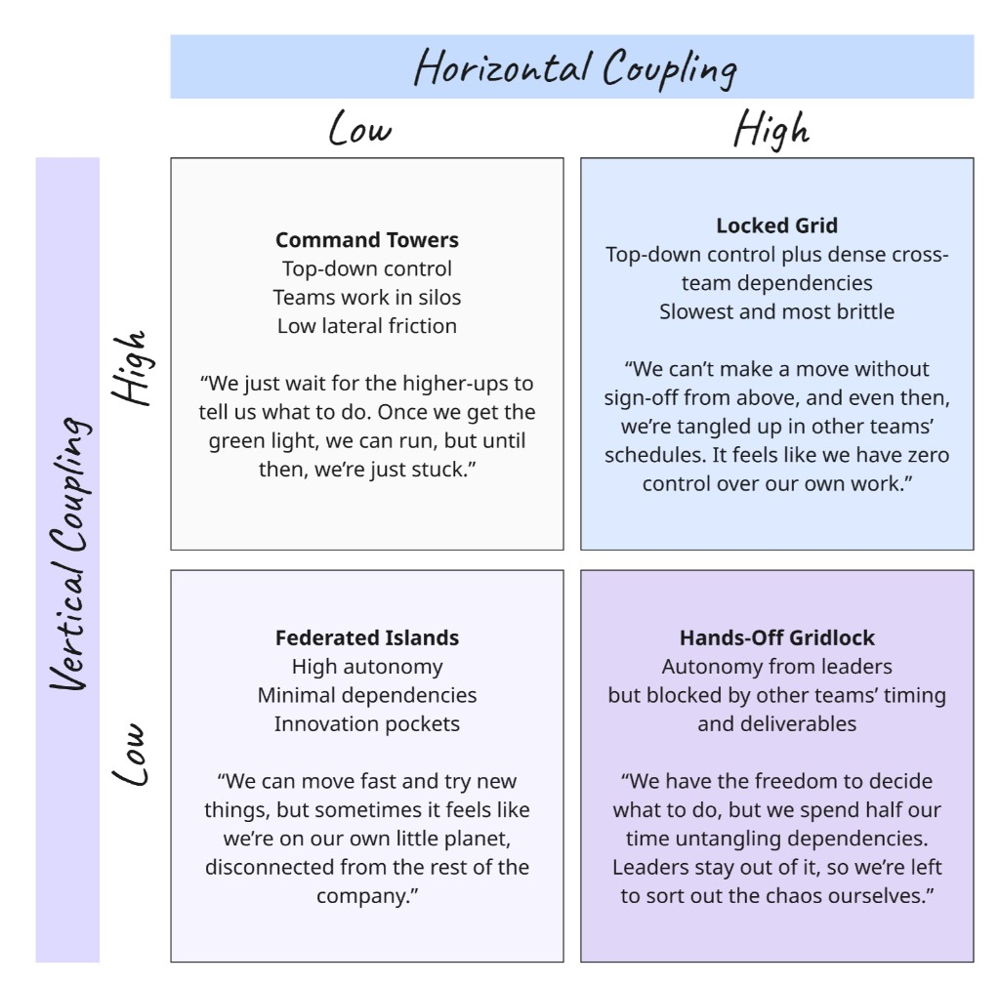
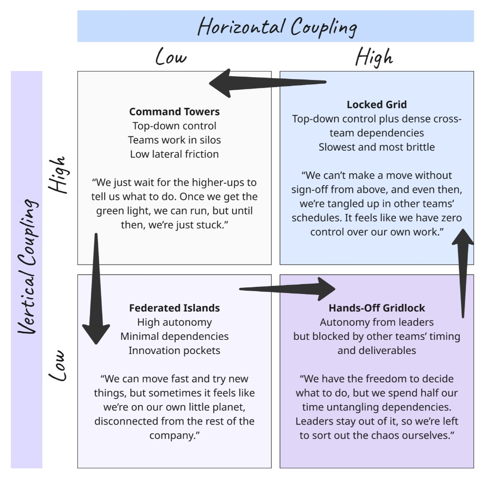

Coupling, Legibility, and Métis
Summary
Coupling changes how much coordination a system requires; legibility and métis are two different ways of carrying that burden, and each quadrant fails in a different way.
This quadrant model is useful because it shows that friction is not just about process quality. It is also about how much of the coordination burden is being carried by formal abstractions versus local judgment.
Read through the language of this series, the diagram is partly about control and autonomy, but more deeply about whether the system's endurants, perdurants, and abstractions match reality closely enough to support the work.

A coupling quadrant can be read as a map of where legibility dominates, where métis dominates, and where each one starts to fail.
Command Towers
This is the most legibility-first quadrant.
In this setting:
- legibility dominates
- métis is suppressed
- the endurants are large, stable, and imposed: teams, functions, projects
- the perdurants are standardized, top-down workflows
Work is shaped into clean, stable containers. Processes are predefined and expected to repeat. The system assumes nouns that behave and verbs that repeat.
This works as long as:
- the abstractions are close enough to reality
- the work is not too dynamic
In knowledge work, the problem is that local context gets compressed out. Teams wait for decisions because the system must update first.
Friction type:
- waiting friction
- suppressed adaptation
Failure mode: the model becomes the bottleneck. The system is legible, but not responsive.
Locked Grid
This is the most structurally constrained quadrant.
In this setting:
- attempted legibility dominates under extreme coupling
- métis is overwhelmed
- the endurants are very large and highly entangled: cross-team initiatives, programs
- the perdurants are interwoven and non-linear in reality, but forced into linear stages
The "thing" spans many teams. The "flow" is deeply interdependent. Legibility is pushed hard to control the system.
But:
- the abstractions are often lossy
- the process cannot actually be linearized
So both begin to break down. Métis struggles too, because the local unit is now too large to reason about effectively.
Friction type:
- coordination friction
- translation friction
Failure mode: everything must be coordinated, but nothing is accurately represented. This is maximum brittleness: the system is both tightly coupled and poorly modeled.
Federated Islands
This is the most métis-friendly quadrant.
In this setting:
- métis dominates
- legibility is minimal
- the endurants are small, local, and often implicit
- the perdurants are emergent, adaptive, and team-specific
Teams operate with strong local context. Definitions evolve as needed. Work is shaped around real conditions rather than imposed categories.
Legibility still exists, but lightly:
- minimal shared structures
- weak global rollups
Friction type:
- low local friction
- occasional global misalignment
Failure mode: local systems work, but the broader organization lacks a strong shared picture.
Hands-Off Gridlock
This is the most unstable quadrant.
In this setting:
- neither legibility nor métis fully works
- effective legibility is missing
- métis is stretched across too many boundaries
- the endurants are cross-team but poorly defined
- the perdurants are highly interdependent and negotiated in real time
Work requires coordination across teams, but no strong legible system exists to support it. So teams rely on:
- constant conversation
- ad hoc negotiation
- re-interpretation of shared work
But:
- no shared abstraction stabilizes meaning
- no structure reduces the coordination burden
Friction type:
- continuous coordination friction
- high cognitive load
Failure mode: perpetual negotiation. The system depends on métis, but spreads it too thin to be effective.
The Cycle
The important thing about the quadrants is that organizations do not usually stay in one of them. The pattern is often cyclical.
One common sequence looks like this:
Locked Gridbecomes unbearable because coordination and abstraction both break down- leaders respond by pulling toward
Command Towersto reset control - that reset reduces ambiguity, but eventually becomes too top-down and too slow
- pressure then pushes the system toward
Federated Islandsso teams can move again - over time, dependencies accumulate across those islands
- the system drifts toward
Hands-Off Gridlockand then back towardLocked Grid

The quadrants often behave less like destinations and more like a recurring movement between control, autonomy, and accumulating coordination burden.
What changes from one turn of the cycle to the next is not just the amount of control. It is also the quality of the abstractions the system is using.
If the abstractions improve, the cycle can loosen. If they remain poor, the organization keeps rediscovering the same friction in different forms.
Cross-Quadrant Insight
This diagram is really about how organizations distribute the burden between legibility and métis under different coupling conditions.
Horizontal coupling increases the need for shared understanding. It pushes toward legibility, shared anchors, or a wider local scope for métis.
Vertical coupling increases imposed structure. It pushes toward standardized endurants and perdurants, but also risks over-compressing reality.
Endurants and Perdurants
Across the diagram:
- endurants become smaller and more local in low-coupling settings
- endurants become larger and more abstract in high-coupling settings
- perdurants stay more emergent and adaptive in low-coupling settings
- perdurants are more likely to be forced into standardized sequences in high-control settings
The key issue is not just the amount of coupling. It is whether the endurants and perdurants being used in the model actually match reality.
Abstraction Quality
This cuts across all four quadrants.
Good abstractions:
- reduce friction
- support both legibility and métis
- let local judgment and shared structure reinforce each other
Poor abstractions:
- increase translation work
- force teams to rebuild context elsewhere
- make both legibility and métis work harder than they should
That is why Locked Grid becomes unbearable and Hands-Off Gridlock becomes chaotic.
Final Synthesis
Coupling determines how much coordination is required. Legibility tries to make that coordination manageable. Métis fills the gaps where legibility falls short.
The tighter version is this: when coupling rises, the system must either improve its abstractions or rely more heavily on métis. If it does neither, friction explodes.
Try This Now
- Pick one area of work that regularly crosses teams or functions.
- Ask which quadrant it feels closest to right now: Command Towers, Locked Grid, Federated Islands, or Hands-Off Gridlock.
- Then ask: is the coordination burden being carried mostly by good abstractions, or by people compensating in real time?
Keep Reading
Factors Shaping Legibility and Métis